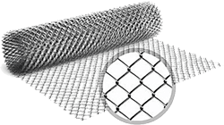

Купить сетку со скидкой
| Наиминование | более 5000 грн. |
более 10000 грн. |
более 20000 грн. |
более 40000 грн. |
более 80000 грн. |
| Вы гарантировано получаете скидку | 0.5% | 1% | 1.5% | 2% | 2.5% |
| БЕСПЛАТНАЯ доставка по городу при заказе на сумму свыше 19 999 тыс.грн. | |||||
Цены на сетку сварную
| Наиминование | Цeна (грн)за метр2 | Цeна (грн)за 1 рулон |
| Сетка в рулоне 12/12/0,9 оцинкованная 30/1 | 52.00 | 1770.00 |
| Сетка в рулоне 12/12/1.2 оцинкованная 15/1 | 52.00 | 1770.00 |
| Сетка в рулоне 12,5/12,5/0,9 оцинкованная 30/1 | 52.00 | 1770.00 |
| Сетка в рулоне 12,5/12,5/1.4 оцинкованная 30/1 | 52.00 | 1770.00 |
| Сетка в рулоне 20/20/0,76 ПВХ 30/1 31.33 | 52.00 | 1770.00 |
| Сетка в рулоне 25/12/0.7 черная 30/1 | 52.00 | 1770.00 |
| Сетка в рулоне 25/12/1.2 оцинкованная 30/1 | 52.00 | 1770.00 |
| Сетка в рулоне 25/12/1.4 оцинкованная 15/1 | 52.00 | 1770.00 |
| Сетка в рулоне 25/12/1.4 оцинкованная 30/1 | 52.00 | 1770.00 |
| Сетка в рулоне 25/25/1 оцинкованная 30/1 | 52.00 | 1770.00 |
| Сетка в рулоне 25/25/1.2 оцинкованная 30/1 | 52.00 | 1770.00 |
| Сетка в рулоне 25/25/1.2 черная 30/1 | 52.00 | 1770.00 |
| Сетка в рулоне 25/25/1.4 оцинкованная 30/1 | 52.00 | 1770.00 |
| Сетка в рулоне 25/25/1.4 оцинкованная 30/1 | 52.00 | 1770.00 |
| Сетка в рулоне 25/25/1.4 черная 30/1 | 52.00 | 1770.00 |
| Сетка в рулоне 25/25/1.6 оцинкованная 30/1 | 52.00 | 1770.00 |
| Сетка в рулоне 25/25/2 оцинкованная 15/1 | 52.00 | 1770.00 |
| Сетка в рулоне 35/35/1.8 оцинкованная 10/1,5 | 52.00 | 1770.00 |
| Сетка в рулоне 50/25/1.2 оцинкованная 30/1 | 52.00 | 1770.00 |
| Сетка в рулоне 50/25/1.4 оцинкованная 30/1 | 52.00 | 1770.00 |
| Сетка в рулоне 50/25/1.4 черная 30/1 | 52.00 | 1770.00 |
| Сетка в рулоне 50/25/1.6 оцинкованная 30/1 | 52.00 | 1770.00 |
| Сетка в рулоне 50/25/1.8 оцинкованная 15/1.5 | 52.00 | 1770.00 |
| Сетка в рулоне 50/25/1.8 оцинкованная 30/1 | 52.00 | 1770.00 |
| Сетка в рулоне 50/50/1.2 оцинкованная 30/1 | 52.00 | 1770.00 |
| Сетка в рулоне 50/50/1.4 оцинкованная 30/1 | 52.00 | 1770.00 |
| Сетка в рулоне 50/50/1.4 черная 30/1 | 52.00 | 1770.00 |
| Сетка в рулоне 50/50/1.6 оцинкованная 30/1 | 52.00 | 1770.00 |
| Сетка в рулоне 50/50/1.6 черная 30/1 | 52.00 | 1770.00 |
| Сетка в рулоне 50/50/1.8 оцинкованная 10/1,5 | 52.00 | 1770.00 |
| Сетка в рулоне 50/50/1.8 оцинкованная 15/2 | 52.00 | 1770.00 |
| Сетка в рулоне 50/50/1.8 оцинкованная 30/1 | 52.00 | 1770.00 |
| Сетка в рулоне 50/50/1.8 оцинкованная 30/1,5 | 52.00 | 1770.00 |
| Сетка в рулоне 50/50/2 оц+ПВХ 25/2 | 52.00 | 1770.00 |
| Сетка в рулоне 50/50/2 оцинкованная 15/2 | 52.00 | 1770.00 |
| Сетка в рулоне 60/60/1.8 оцинкованная 10/1,5 | 52.00 | 1770.00 |
| Сетка в рулоне 100/50/1.8 оцинкованная 30/1,5 | 52.00 | 1770.00 |
| Сетка в рулоне 100/50/1.8 оцинкованная 30/1,8 | 52.00 | 1770.00 |
| Сетка в рулоне 100/50/1.8 оцинкованная 30/1,8 | 52.00 | 1770.00 |
| Сетка в рулоне 100/50/2,0 ПВХ 25/1,5 | 52.00 | 1770.00 |
| Сетка в рулоне 100/50/2,0 ПВХ 30/1,5 | 52.00 | 1770.00 |
| Сетка в рулоне 100/50/2,5 ПВХ 30/1,5 | 52.00 | 1770.00 |
| Сетка в рулоне 100/75/1.8 оцинкованная 30/1,5 | 52.00 | 1770.00 |
| Сетка тканая П2-10-1 Н/В (10*10*1) h-1м | 52.00 | 1770.00 |
| Сетка тканая П2-12-1 Н/В (10*10*1) h-1м | 52.00 | 1770.00 |
Сетка рабица
Еще один популярный вид сетки – это сетка рабица. Ее активно используют в строительных работах, для укрепления железобетонных конструкций, при создании вольеров, клеток, изгородей, для просеивания различных материалов (в том числе в сельском хозяйстве), укрепления склонов на холмистых и горных местностях. Данный тип сетки незаменим при ограждении различных по назначению частных и промышленных территорий, площадок, строительных объектов. Как правило, рабица производится в рулонах.
Компания "КТ-Сталь" предлагает сварные металлические сетки (ВР1, рабица) различных размеров Цена и основные параметры каждой представленной единицы указаны в таблице. Склад магазина находится в г.Харькове, но возможна доставка по Харьковской области любых объемов с бесплатной погрузкой и (если необходимо) нарезкой сетки.
Как правильно установить забор из сетки рабицы?
Забор на основе сетки рабицы – это один из наиболее популярных видов металлической ограды. Столь значительный уровень распространения достаточно просто объяснить: сетка рабица – это максимально прочный, надежный и недорогой материал. Приобрести его можно без проблем в любом магазине, специализирующемся на строительных товарах. Не представляет проблем и процесс транспортировки, так как продажа товара ведется в рулонах. Забор на основе этой сетки не препятствует попаданию на участок солнечных лучей, необходимых для здорового роста садовых культур и растений. Процесс установки забора из сетки рабицы вполне возможен своими руками, поскольку какие-либо специализированные навыки просто не требуются. Всего имеется два способа монтажа заборов: секционный и натяжной. Наиболее прост и быстрый монтаж, который ведется на основе натяжной методики.
Когда столбы надежно установлены, начинается стадия монтажа сетки. Рулон ставится на угловом столбе и закрепляется за край. Если сетка не имеет надежной защиты от ржавчины, то она должна быть приподнята над землей примерно на 10 сантиметров, чтобы в первый же год не случилось гниения. При использовании деревянных столбов сетка крепится на гвоздях или скобах, на металлических столбах, в свою очередь, нужно установить крючки. Чтобы не допустить провисания, через верхний край сетки следует пропустить арматурный прут, надежно фиксирующийся на столбах.
Чтобы добиться предельного уровня надежности, прут можно пропустить и по нижнему краю. Если сетка смонтирована в полном соответствии с правилами, то она длительное время не провиснет, а потому вам не придется заниматься восстановительными работами.
Почему с нами выгодно сотрудничать:
Каждого нашего гостя и клиента мы угощаем чашечкой ароматного кофе;
Вы получите бесплатную квалифицированную и вежливую консультацию от сотрудников отдела продаж;
Доставки осуществляются в удобное для ВАС время;
Быстрое оформление заказа поможет сэкономить ВАШЕ время;
Мы обеспечиваем ВАМ бесплатную погрузку в крутыю машину;
"КТ-Сталь" окажет ВАМ услуги ответственного хранения.
Дополнительная информация
Сварные сетки по точности изготовления могут быть повышенной либо нормальной точности. Важный параметр при выборе необходимой сетки – размеры ее ячеек, которые бывают квадратной или прямоугольной формы с различными параметрами (наиболее частые ячейки в 25, 50, 100, 150 и 200 мм), а так же диаметр проволоки (2,3,4,5,6мм) и размер карты 2/1м, 2/0,5м, 2/0,38м.
Сфера применения сварной сетки
СварСетканая сетка имеет достаточно широкий спектр применения. Она незаменима при армировании кладки в процессе строительства объектов любого характера и сложности, для армирования стекла, полов, штукатурки, теплоизоляции. Кроме того, сварная сетка активно используется для создания различных оградительных конструкций, клеток либо вольеров для птиц и животных, основ под живые изгороди и др. Купить сетку сварную металлическую можно для осуществления армирования бетонных полов, кирпичной кладки, различных элементов строения: таких как отмостка, армопояс, армошов и многого другого, ведь стройка без сетки — деньги на ветер. Также сварная сетка незаменима при строительстве дорог. Соответственно, не только в Харькове на базах металлопроката сварные сетки принято делить на кладочные и дорожные (в зависимости от цели будущего использования).
Особенности производства сварной сетки
Сетка сварная изготавливается из металлической проволоки различных типов и параметров. В процессе производства готовое полотно формируется из продольных стержней, которые подаются из специальных мотков — «бухт», и поперечных, мерных кусков проволоки. В зависимости от типа изделия, продольные и поперечные элементы могут иметь равные параметры либо отличаться размерами сечения, наличием или отсутствием рифления. Сетка сварная сваривается при помощи специализированного сварочного оборудования. В процессе изготовления электроды прижимают поперечную и продольную проволоку друг к другу, пропуская через заготовки электрический ток. В результате стержни разогреваются до температуры плавления и усиленно сжимаются в местах пересечения. Качество и прочность соединений зависит от силы тока, длительности сваривания, а также усилия прижатия.
На что обращать внимание при выборе сварной сетки?
Сварная сетка применяется в качестве основного материала во многих строительных и хозяйственных сферах. Именно поэтому подходить к выбору материала с особой внимательностью — некачественная сетка в разы сокращает сроки службы выполненного из нее изделия, повышая риски преждевременного разрушения. При выборе материала специалисты рекомендуют обращать внимание на следующие характеристики:
Качество сварки - прутки должны прочно прилегать друг к другу в местах сварки. Наиболее качественными считаются изделия, изготовленные методом контактной сварки.
Толщина проволоки - прутки должны иметь одинаковое сечение по всему полотну, что обеспечивает прочность и износоустойчивость сварной сетки.
Запас прочности — изделие должно без ущерба выдерживать значительные перегибы. Так, например, некачественная сетка может начать лопаться даже при разматывании рулона, тогда как полотно высокого качество способно выдержать интенсивные нагрузки на перегиб.
Сертификация и соответствие ГОСТам.
В «КТ-Сталь» можно купить сетку сварную в Харькове по разумной стоимости. Вся представленная на сайте продукция соответствует высоким госстандартам качества. Мы предлагаем полотна с ячейками различных размеров для строительных и хозяйственных целей. В зависимости от Ваших потребностей возможны крупные поставки сетки по оптовым ценам, а также розничная продажа материала от 1 метра. На сайте указаны расценки полотна за 1 метр, 1, 5 и 10 рулонов, что позволит быстро рассчитать бюджет вашего строительства. Доставка сварной сетки в Харькове осуществляется по городу и области.